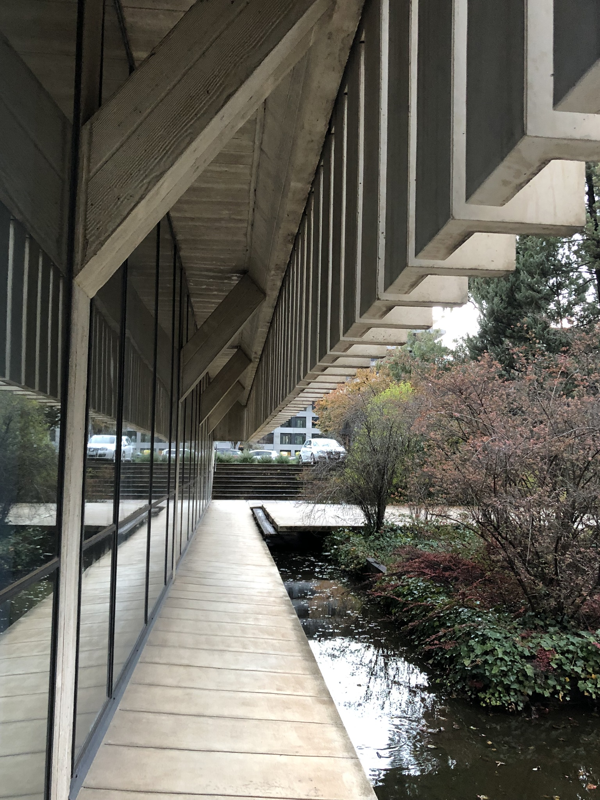
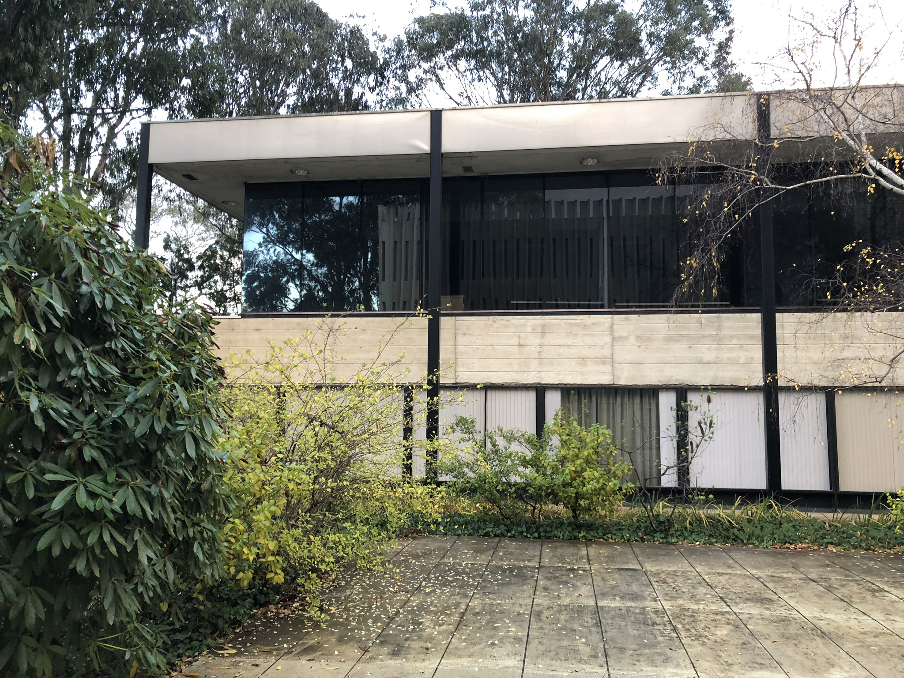
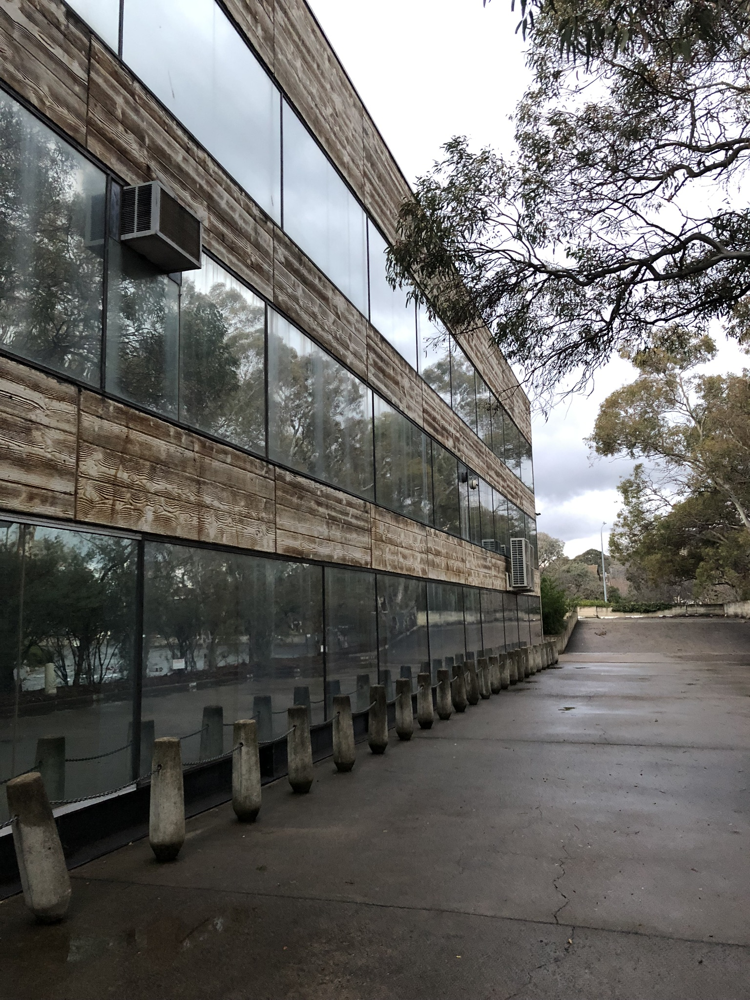
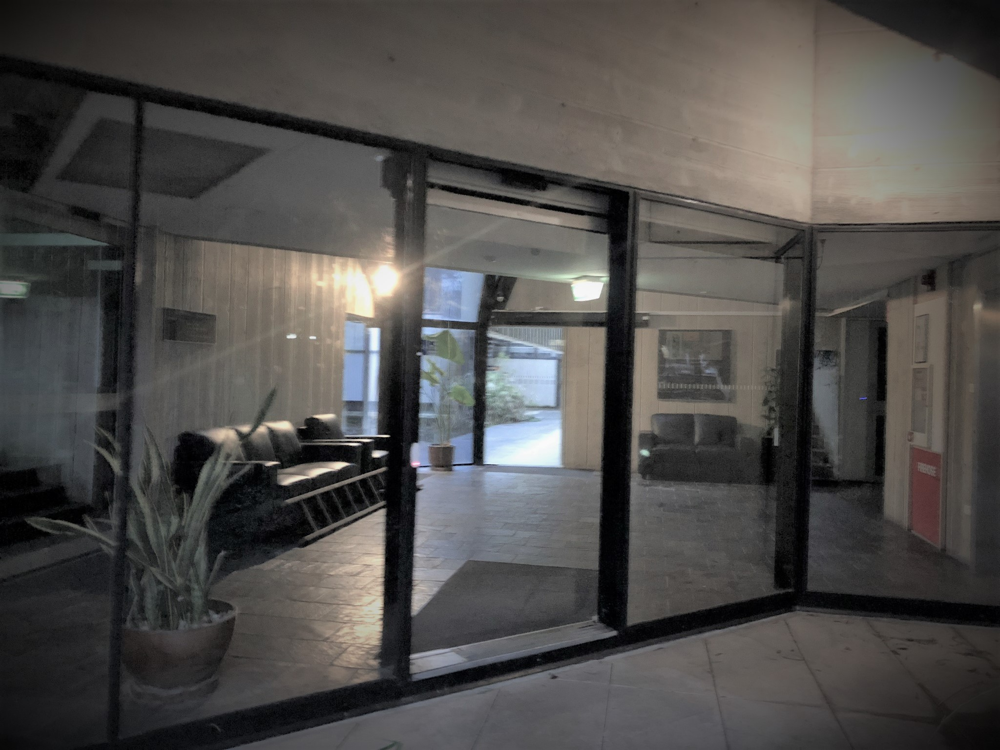
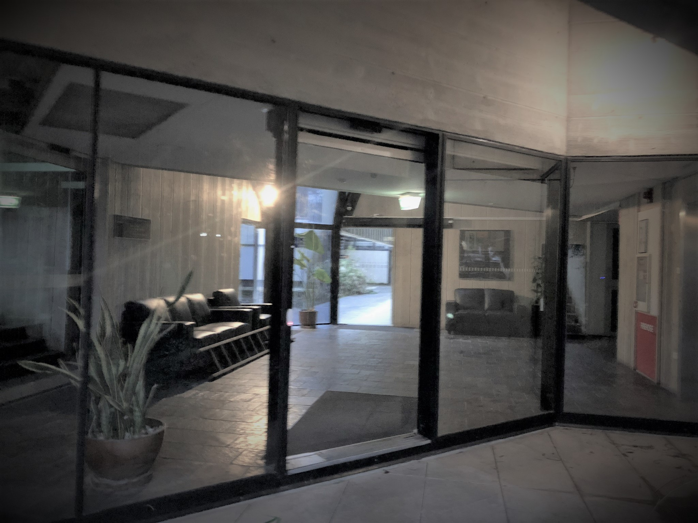

Main building
The main building displays several different elevational treatments. The elevations facing onto the pool area feature floor to ceiling glass with minimal black metal frames to the lowest level, and precast vertical panels on the upper two storeys. Each panel has a projecting fin and are relatively narrow, with the overall affect being of closely spaced vertical fins. Beside the fins are narrow, slot windows providing minimal outlook onto the pool area.
 The south and east elevations are quite different in character having long horizontal sections of flush-mounted glazing set in minimal black metal frames, with timber-textured off-form concrete spandrels between storeys. The base course of the elevation is a large section black-coated steel beam. Several window-mounted air conditioners are located on the south elevation. The blank end walls of the wings and the lift tower are off-form, timber-textured concrete with incised storey lines.

At the junction of the two wings are the foyers for each floor as well as the service core including the lift. Apart from the off-form concrete walls of the service elements, the foyers feature glazing set in black metal frames which extends the full height of the building. At the ground floor level the glazing is vertical but above that for the remaining two storeys it is sloping.
 

The building has concrete slab floors which are either carpeted or finished in slate. Some interior walls are textured, off-form concrete similar to the exterior. Other walls are lightweight partitions. There is a mixture of ceiling treatments: off-form concrete, suspended ceilings and set plasterboard. Many of the interior fit outs appear relatively modern and are not original. The roof of the main building is set behind a parapet and appears to be graded concrete with a membrane coating.